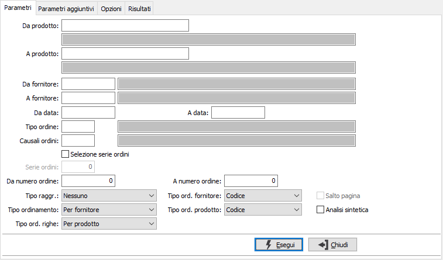
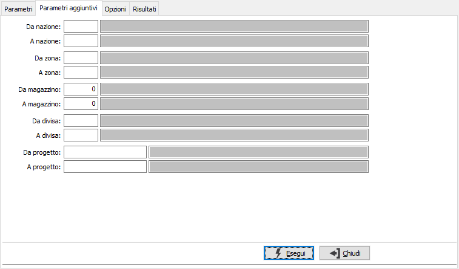
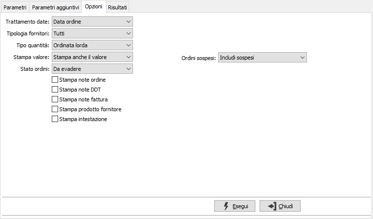
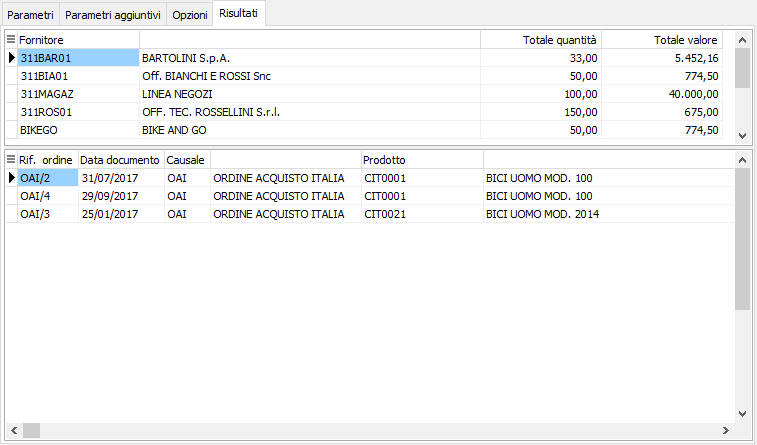

Analisi ordini fornitori
Il programma produce analisi sintetiche ed analitiche degli ordini esistenti in base ad una serie di parametri principali, di ulteriori parametri aggiuntivi e di opzioni di selezione inseriti dall’utente. I parametri di selezione sono ripartiti su tre finestre video consecutive.

DA PRODOTTO: eventuale codice dell'articolo, presente in anagrafica Prodotti, da cui si desidera iniziare la selezione di analisi. Confermando a vuoto, la selezione inizia con il primo prodotto valido. Sul campo sono attive le funzioni di ricerca (F9).
A PRODOTTO: eventuale codice dell'articolo, presente in anagrafica Prodotti, a cui si desidera terminare la selezione di analisi. Confermando a vuoto, la selezione termina con l’ultimo valido. Sul campo sono attive le funzioni di ricerca (F9).
DA FORNITORE: eventuale codice del fornitore, presente in anagrafica fornitori, da cui si vuole iniziare la selezione di analisi. Confermando a vuoto, la selezione inizia dal primo fornitore valido. Sul campo sono attive le funzioni di ricerca (F9).
A FORNITORE: eventuale codice del fornitore, presente in anagrafica fornitori, con cui si vuole terminare la selezione di analisi. Confermando a vuoto, la selezione termina con l’ultimo fornitore valido. Sul campo sono attive le funzioni di ricerca (F9).
DA DATA: eventuale data da cui deve iniziare l’analisi dei documenti relativamente ai precedenti parametri di selezione. Confermando a vuoto, l’analisi inizia con il primo documento valido.
A DATA: eventuale data con cui si desidera terminare l’analisi dei documenti relativamente ai precedenti parametri di selezione. Confermando a vuoto, l’analisi si conclude con l'ultimo documento valido.
TIPO ORDINE: eventuale codice della tipologia di ordini (gruppo di causali omogenee) a cui si vuole limitare la selezione di analisi. Sul campo sono attive le funzioni di ricerca (F9).
CAUSALE ORDINE: eventuale codice della Causale ordini a cui si vuole limitare la selezione di analisi. Sul campo sono attive le funzioni di ricerca (F9).
SELEZIONE SERIE ORDINI: check box per definire se devono essere esaminati gli ordini relativi ad una specifica serie sezionale indipendentemente dalla causale o dal tipo ordine o meno. Valori ammessi: vuoto = no; spunta = si.
SERIE ORDINI: Campo abilitato solo in caso di selezione serie ordini attiva, per indicare il numero della serie sezionale da esaminare.
DA NUMERO ORDINE: indicare il numero dell'ordine da cui iniziare l'analisi.
A NUMERO ORDINE: indicare il numero dell'ordine con cui terminare l'analisi.
TIPO RAGGRUPPAMENTO: combo box per definire le modalità di raggruppamento in fase di stampa degli ordini selezionati. Valori ammessi: Nessuno; Nazione; Zona.
TIPO ORDINAMENTO: combo box per definire le modalità di ordinamento in fase di stampa degli ordini selezionati. Valori ammessi: Per fornitore; Per prodotto; Anno/numero.
TIPO ORDINAMENTO RIGHE: combo box per definire le modalità di ordinamento delle righe degli ordini selezionati. Valori ammessi: Per fornitore; Per prodotto; Anno/numero/numero rigo.
TIPO ORDINAMENTO FORNITORE: combo box per definire, in caso di ordinamento per fornitore, le ulteriori modalità di ordinamento relativamente al fornitore in fase di stampa degli ordini selezionati. Valori ammessi: Per codice; Per ragione sociale.
TIPO ORDINAMENTO PRODOTTO: combo box per definire, in caso di ordinamento per prodotto, le ulteriori modalità di ordinamento relativamente al prodotto in fase di stampa degli ordini selezionati. Valori ammessi: Per codice; Per descrizione.
SALTO PAGINA: Campo abilitato solo in caso di raggruppamento attivo, indicare se effettuare il salto pagina al cambio di codice di raggruppamento (casella con segno di spunta).
STAMPA SINTETICA: indica se effettuare la stampa in formato sintetico (casella con segno di spunta) o completa (casella vuota).
I criteri di selezione principali fin qui esaminati sarebbero già sufficienti per eseguire una selezione. Necessitando tuttavia di ulteriori filtri, si passa alla seconda sezione video:

DA NAZIONE: codice della nazione da cui si intende iniziare la selezione di analisi; confermando a vuoto la selezione inizia dal primo codice valido. Sul campo sono attive le funzioni di ricerca (F9).
A NAZIONE: codice della nazione con cui si intende concludere la selezione di analisi; confermando a vuoto la selezione termina con l’ultimo codice valido. Sul campo sono attive le funzioni di ricerca (F9).
DA ZONA: codice della zona da cui si intende iniziare la selezione di analisi; confermando a vuoto la selezione inizia dal primo codice valido. Sul campo sono attive le funzioni di ricerca (F9).
A ZONA: codice della zona con cui si intende concludere la selezione di analisi; confermando a vuoto la selezione termina con l’ultimo codice valido. Sul campo sono attive le funzioni di ricerca (F9).
DA MAGAZZINO: codice del magazzino da cui si intende iniziare la selezione di analisi; confermando a vuoto la selezione inizia dal primo codice valido. Sul campo sono attive le funzioni di ricerca (F9).
A MAGAZZINO: codice del magazzino con cui si intende concludere la selezione di analisi; confermando a vuoto la selezione termina con l’ultimo codice valido. Sul campo sono attive le funzioni di ricerca (F9).
DA DIVISA: codice della divisa da cui si intende iniziare la selezione di analisi; confermando a vuoto la selezione inizia dal primo codice valido. Sul campo sono attive le funzioni di ricerca (F9).
A DIVISA: codice della divisa con cui si intende concludere la selezione di analisi; confermando a vuoto la selezione termina con l’ultimo codice valido. Sul campo sono attive le funzioni di ricerca (F9).
DA PROGETTO: campo attivo solo in caso di gestione progetti attiva; codice del progetto da cui si intende iniziare la selezione di analisi; confermando a vuoto la selezione inizia dal primo codice valido. Sul campo sono attive le funzioni di ricerca (F9).
A PROGETTO: campo attivo solo in caso di gestione progetti attiva; codice del progetto con cui si intende concludere la selezione di analisi; confermando a vuoto la selezione termina con l’ultimo codice valido. Sul campo sono attive le funzioni di ricerca (F9).
Al termine della seconda finestra video di selezione, non avviando la selezione si passa alla finestra video opzioni:

TRATTAMENTO DATA: combo box per definire quale fra le date presenti sugli ordini deve essere assunta come criterio di analisi. Valori ammessi: Data ordine; Data consegna; Data arrivo.
TIPOLOGIA FORNITORE: combo box per definire quale tipologia di fornitore deve essere assunta come criterio di analisi. Valori ammessi: Tutti; Italia; Estero.
TIPO QUANTITÀ: combo box per definire quale tipologia di quantità deve essere considerata in analisi. Valori ammessi: Ordinata lorda; Ordinata netta; Da ricevere.
STAMPA VALORE: combo box per definire i criteri per la stampa del valore. Valori ammessi: Non stampa il valore; Stampa anche il valore; Stampa solo il valore.
STATO ORDINI: definisce lo stato dei documenti da selezionare. Valori ammessi: tutti, da evadere, già evasi, solo completamente inevasi, solo parzialmente evasi, solo totalmente evasi.
STAMPA NOTE ORDINE: check box per definire se stampare le note di ordine o meno. Valori ammessi: vuoto = no; spunta = si.
STAMPA NOTE DDT: check box per definire se stampare le note di Ddt o meno. Valori ammessi: vuoto = no; spunta = si.
STAMPA NOTE FATTURA: check box per definire se stampare le note di fattura o meno. Valori ammessi: vuoto = no; spunta = si.
STAMPA PRODOTTO FORNITORE: check box per definire se stampare codici e descrizione prodotti dei fornitori, se presenti, o meno. Valori ammessi: vuoto = no; spunta = si.
STAMPA INTESTAZIONE: indica se deve essere stampata come prima pagina del report una pagina contenente tutte le informazioni inerenti i criteri di selezione specificati per il report stesso (casella con segno di spunta).
ORDINI SOSPESI: il campo è presente solo se è attiva la gestione degli ordini sospesi, consente di specificare se nell'analisi devono essere mostrati gli ordini sospesi; può assumere i valori di Includi sospesi, Solo sospesi, Escludi sospesi.
Confermando tramite pressione del bottone Esegui, viene avviata la selezione e richiamata la finestra video Risultati. Sono attivi i tasti Anteprima e Stampa sulla toolbar principale per effettuare la stampa del report.
